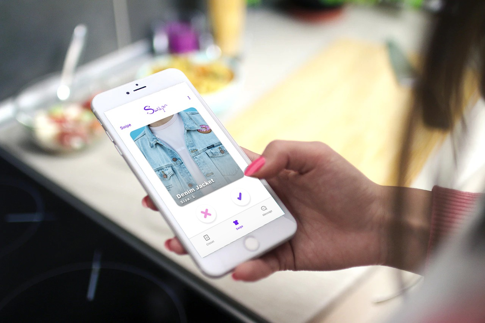

SWAPR
by Sara Bruszt and Dominick Nardone
CONCEPT
Swapr is a location-based mobile application. The user can upload pieces of clothing they don’t need anymore and match with others within a given distance to swap clothes. We offer a solution for digital natives to stay cool, make new friends, and most importantly reduce environmental impact.
PROBLEM
Fast fashion has a large impact on the environment. Even though, there are a lot of solutions out there, buying fewer fashion products, buying second-hand, buying sustainable brands etc., we felt there are not enough options for the consumers to look fashionable without having a negative impact on the environment.
IDEA
We came up with the idea of a Tinder-like application, where one can swipe through pieces of clothing uploaded by others in the area. We want the user to have a fun experience of getting second-hand clothes and reduce the amount of clothing that gets thrown out every year.
RESEARCH
We started by interviewing people through an online survey and figured that most people would like the idea. Most of them liked the idea of getting second-hand clothes for free and some mentioned Swapr would be a great way of meeting new people of similar style.
LOW-FI PROTOTYPE
LOGO
With the logo we wanted to emphasize the aspect of recycling and swapping as well as the fashion aspect of Swapr.
FIRST VISUAL DESIGNS
The first iterations of visual design looked very similar to Tinder's. We thought this is a good thing as people will instantly know what interaction they have to do in order to progress.
USERS
Our users are ideally teenagers, young adults who are digital natives, social, fashionable and conscious consumers.
USER STORY
They can swipe and match with clothes. Then they can message and talk to the other person to discuss a meeting point. There is no shipping involved. We want to make this a personal fun game where on can make new friends as well.
FINAL PROTOTYPE
After two rounds of user feedback and user testing we changed some things in the design. Many users suggested the implementation of some sort of rating system so that they know the users they match with are trustworthy.
SWIPE

ADD CLOTHES TO CLOSET

TEXT
RATE
tools used : Illustrator, Sketch, Invision, XD